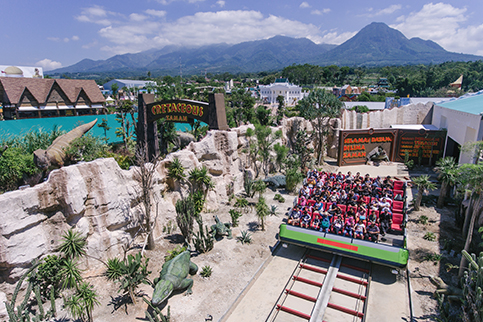
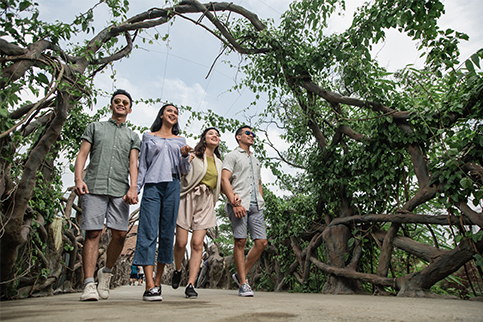

Jelajah 5 Zaman
Jelajah 5 Zaman adalah zona yang tepat untuk anda mempelajari alur waktu dari zaman prasejarah.
Disini anda akan disajikan film mengenai kehidupan dari dinosaurus dan bagaimana mereka berinteraksi
dengan dino-dino lain. Tak hanya itu terdapat dua kereta ukuran raksasa dengan kapasitas 48 orang
dan siap untuk mengajak anda berkeliling mengenali berbagai makhluk dari Zaman Permian hingga zaman Ice Age.
Dengan narasi yang informatif memastikan anda mengenal satu persatu dino yang terdapat di Jelajah 5 Zaman.
Kerangka Dino
Kerangka dinosaurus raksasa ini bisa kamu lihat di Museum Dino. Kerangka ini bisa menunjukkan ukuran
tinggi dan panjang badan dinosaurus seperti Tyranosaurus Rex yang ikonik. Ada juga berbagai kerangka
dinosaurus lainnya seperti Triceratops, Apatosaurus, dan lainnya!

Jembatan Akar
Jembatan satu ini bukanlah jembatan biasa, karena disini anda akan melihat berbagai macam dinosaurus
dari ketinggian, namun meskipun anda di ketinggian bukan berarti anda adalah tertinggi, karena elasmo
saurus akan menyapa anda dengan lehernya yang panjang hingga jauh lebih tinggi dari jembatan akar itu
sendiri. Jembatan akar juga menghubungkan anda dengan zona-zona yang siap menunggu anda didepan!
Food Court Dino
Sudah pernah merasakan menikmati hidangan ditemani dengan kerangka dinosaurus. Ya… anda bisa mendapatkan
pengalaman menakjubkan itu di Food Court Dino. Food Court yang memiliki dua lantai ini mempunyai pemandangan
yang menakjubkan karena berada di tepi sungai yang dipenuhi dinosaurus. Dengan kapasitas hingga ratusan
pengunjung memastikan anda bisa menikmati hidangan Bersama rombongan anda!.
The Rimba
Kini anda bisa berjalan ditengah-tengah makhluk prasejarah di The Rimba. Saksikan puluhan jenis makhluk
prasejarah dikanan dan kiri anda, anda akan merasa seperti hidup bersama mereka. Jangan lewatkan pengalaman
menakjubkan di The Rimba!
Ice Age
Zaman Es atau Ice Age adalah zaman dimana bumi mempunyai suhu ekstrim bahkan hingga daratan tropis seperti
di Indonesia. Pada Zaman ini berbagai makhluk hidup dan bertahan seperti Mamoth, smilodon dan makhluk-makhluk
lainnya. Penasaran makhluk apa saja yang hidup di Ice Age?, jangan lewatkan zona yang satu ini!
Life With Dino
Dengan suasana yang khas timur tengah adalah lokasi tepat untuk berfoto-ria Bersama orang-orang tercinta.
Terdapat spot-spot cantik yang terdapat disudut-sudut memastikan setiap angle yang anda ambil merupakan
foto yang sempurna untuk dikenang. Tedapat labirin yang seru untuk dipecahkan dan terdapat danau buatan
yang penuh dengan dinosaurus.